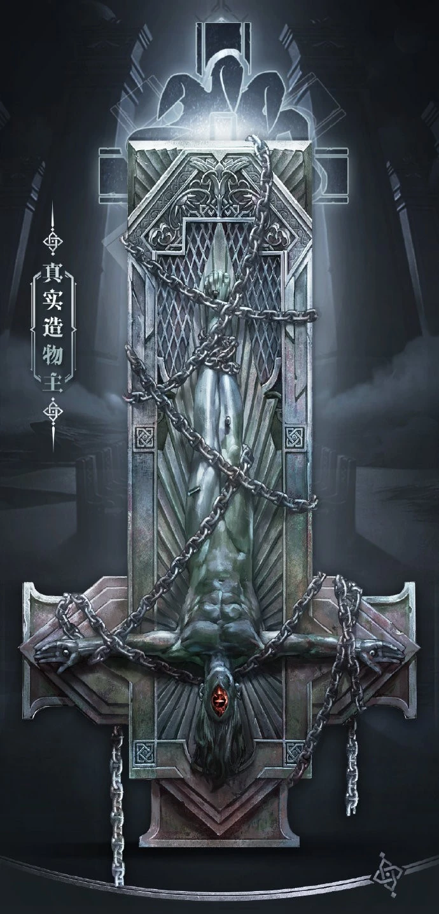

Overview
Other Identities: Ancient Sun God, Adam, True Creator, Sasrir
I am more inclined to call him, the Fallen Creator.
The Fool, Book 1, chapter 93
The True Creator is the Sequence 0 God of the Hanged Man Pathway. "He" is considered to be evil. "He" claims to be the inheritor of the Almighty Creator (Ancient Sun God) who was worshiped during the Second Epoch and Third Epoch.
Honorific Names
True Creator
The Lord that Created Everything; The Lord who Reigns Behind the Curtain of Shadows; The Degenerate Nature of all Living Things (创造一切的主， 阴影帷幕后的主宰， 所有生灵的堕落自性)
After Fusion
Appearance
The True Creator has appeared in many forms in the Fifth Epoch, including "The Hanged Giant", "Eyes behind the Shadow Veil".11
"His" true form was an indistinct figure hanging upside down on a huge cross at the top of a mountain peak in the depths of the Forsaken Land of the Gods.12 During the fusion process with Adam, "He" appeared as a shadow-like curtain/screen on the surface of the huge cross.13 4Book 1, chapter 138114
"He" has black pupils.15
Claims
It is believed by "His" worshipers that the True Creator inherited the core of the Original Creator. The temple of the True Creator showed paintings claiming that when the Cataclysm in the Third Epoch took place, the Orthodox Gods came from the Abyss while the True Creator endured all the sins and saved the world.16 17
His believer from Aurora Order also claims that every human being had divine qualities, and as long as they persevered and made it through the countless trials, they would be able to accumulate enough divine qualities to become Angels. Other Gods are merely powerful Angels.
The True Creator's followers believe that there exists a holy residence where the True Creator once lived. They seem to know the direction as the little boy Jack successfully entered the Forsaken Land of the Gods and into the True Creator's Temple.
Background
The Twilight Hermit Order strongly despise the True Creator. Hermes said it's because "His" authority is closest to making "Him" "omnipotent". All Orthodox Churches are also against the True Creator.18
It is later revealed that the True Creator is in fact, the result of the Ancient Sun God's resurrection after "He" was killed by the Rose Redemption. After the three traitors feasted on the Ancient Sun God's remains, "He" was only able to rush to retrieve Sasrir's personality, the Hanged Man Pathway Uniqueness and Beyonder characteristics, and the authority of Degeneration from "His" dead corpse; it combined with the extreme emotions "He" felt when "He" fell, thus being reborn in the corpse and forming the True Creator.5Book 1, chapter 12611Book 1, chapter 1346
Adam and True Creator
The True Creator is the embodiment of the extreme emotions from the Ancient Sun God's death and inherited "His" humanity which drove "Him" into madness.19 6Book 1, chapter 1348 Meanwhile Ancient Sun God's divinity awoke inside Adam who has then been actively seeking for "His" complete revival.20 Since both the True Creator and Adam are a part of the Ancient Sun God, "They" will need to fuse to become complete. "They" have been fighting over who should be the dominant persona ever since "They" both awakened.6Book 1, chapter 1348
During Klein's Apotheosis Ritual, Adam had partially fused with the True Creator with Adam as the dominant persona. Adam temporarily raised "Himself" to the level of a Half Great Old One to interfere with the ritual. This process was actually rather difficult and risky, and would make "Their" progress a lot slower in the future.4
As of Book 2, Adam and the True Creator have fully fused, with Adam becoming the current True Creator.2Book 2, chapter 868
History
The Rose Redemption was said to directly cause the True Creator's birth. After the Rose Redemption killed the Ancient Sun God, "He" was born from the corpse of the Ancient Sun God and extreme emotion "He" felt when "He" died. According to Sasrir, "He" was forced to reborn as the True Creator due to the betrayal of the Wind Angel, Wisdom Angel, and White Angel, and could only take the Hanged Man Pathway characteristics and authority of degeneration.5 Since then, the rest of Rose Redemption, led by Ouroboros and Medici, has been following the True Creator.
In early Fourth Epoch, taking advantage of the schism between the Six Gods, the Solomon Family, led by the Black Emperor Solomon, cooperated with the True Creator and established the Solomon Empire that ruled over the Northern Continent.7Author's WeChat post history The True Creator was an officially worshipped deity of the Solomon Empire, the Church of the True Creator.21
At this time, all deities had their own countries in poorer places and acknowledged the First Solomon Empire and the Black Emperor's rule over the Northern Continent to fight against opposing factions. This made "Them" unable to cooperate in a stable fashion and thus, couldn't form an alliance to fight the Black Emperor and the True Creator.22 Later on, the Six Gods (Evernight Goddess, God of Combat, Earth Mother, Eternal Blazing Sun, Lord of Storms, God of Knowledge and Wisdom) reached an agreement, which led to the fall of the Black Emperor and the first Solomon Empire. Afterward, the Six Gods supported the Tudor-Trunsoest United Empire that ruled the Northern Continent.
Some time in the Second Solomon Empire period, the True Creator and the Underworld Emperor had cooperation.23 "They" and the other gods had certain mingled alliances and balances of power between "Them", leading to a 500-year stalemate between the four empires before it was broken in the War of the Four Emperors.8
Since the True Creator was a negative personality born from the corpse and spirit of the Ancient Sun God, who was deeply influenced by the Chaos Sea, "He" had a rather sizable level of Sefirah authority over the Chaos Sea before the War of the Four Emperors. Therefore, "His" combat strength somewhat exceeded that of a normal Sequence 0,8 and "He" could use all five Pathways at the God level.24 After "He" was severely wounded and sealed by the Seven Gods into the Forsaken Land of the Gods during the War of the Four Emperors,9Book 1, chapter 210 "He" could no longer do so.25
During the Conflicts of the Seven Gods—the period of over 100 years after the War of the Four Emperors—Death relied on a distributary of the River of Eternal Darkness to forcibly accommodate the the Uniqueness of Red Priest to create a brand new Great Old One path. This has the influence of the True Creator, as well as the Celestial Worthy of Heaven and Earth for Blessings who had once accommodated the River of Eternal Darkness which included the Death Pathway.26 Eventually, "He" went mad and caused the Pale Disaster together with the Primordial Demoness.
In the Fifth Epoch, many secret organizations that worship the True Creator emerged, such as Aurora Order and Iron and Blood Cross Order, which is linked to Rose Redemption. Based on the wall paintings in the True Creator's Temple, Ouroboros has led members of Rose Redemption into the Forsaken Land of the Gods, probably as a pilgrimage.
Volume 1: Clown
Main article: True Creator's Spawn (Event)
The True Creator was part of a plot to launch "His" spawn on the world. With the help of Lanevus and Ince Zangwill, "He" impregnated Megose with "His" spawn, which eventually caused the deaths of Klein Moretti and Dunn Smith.9 Though stymied, for the time being, "He" would bide "His" time and try to descend again later.
Volume 2: Faceless
Main article: Death of Lanevus
In Backlund, the True Creator was once again involved in a plot to descend through using Lanevus as "His" vessel. Unfortunately, Klein found out about "His" plot in time, alerted the Nighthawks, and managed to stop it before "His" descent.27
Main article: Battle at the Underground Ruin
Later, in a secret ritual at the end of the volume carried out by Mr. A, Klein once again chanced upon it while fleeing from Ince Zangwill. Fueled by the resentment and despair of Lower East Backlund, the ritual by that point had already started. Klein once again stopped "His" descent by throwing the Master Key at it and letting the curse of Mr. Door stop the ritual. The True Creator failed to descend onto the world once again.3
Volume 3: Traveler
Due to "His" corruption, when Klein let out All Black Eye into the real world for some time, it alerted "His" follower to its whereabouts. This almost let Klein meet directly with Saint of Secret, Botis. However, it was foiled by Die of Probability when it manipulated Botis' luck.
Main article: Chaos on Bayam Mountain
Later, Klein used "His" corruption that was stolen by Tinder in the battle at the mountain of Bayam and it directly invited Botis, who later took Tinder away.
Volume 4: Undying
The True Creator has put "His" attention on Klein. When Klein used Creeping Hunger to sang praise and "His" Honorific Name in the battle against Spirit World Plunderer, "He" directly sent out Ouroboros to deal with Klein. Unfortunately, it failed.
Volume 6: Lightseeker
After Klein was trapped in Forsaken Land of the Gods, "He" felt Klein's arrival and told "His" follower to track him down. "He" got Angel of Holy Words Steph to do it, which led him and Klein to meet at the Ancient Nois City.28
Later, "He" found out one of "His" followers, Saint of Secrets Botis died at the hand of Tarot Club in Backlund and punished Kisma, Saint Tenebrous for it.
After Klein unveiled "His" connection with Sefirah Castle in Forsaken Land of the Gods, "He" arrived at the battlefield and planted a corruptive seed in Klein's body that forced him to open the door that leads to Sasrir's resting place and meet Sasrir.29
Mysteries. Go to the Giant King's Court and meet Sasrir.
True Creator to Klein Moretti, Book 1, chapter 1247
Later during the battle with Sasrir's Evil Spirits, Klein stole the connection of Sasrir and First Blasphemy Slate. The seed that was planted in Klein's body then took over the connection.30 Unfortunately, before the connection was fully formed, Amon came in and stole the Slate by attracting it with something "He" stole before and ran away with it. The seed then turned into a human shadow and pursued Amon.31
Volume 7: The Hanged Man
"He" once again sealed off the Forsaken Land of the Gods.32
After failing to keep Klein in "His" Corpse Cathedral, Adam went in the depths of the Forsaken Land of the Gods, at the top of a mountain peak where a huge cross of the was erected with the True Creator hanging upside down on it.33
Volume 8: Fool
Adam arrived in the Forsaken Land of the Gods to confront the True Creator so "They" could fuse and "He" could be whole again. Adam used Arrodes to trigger the Chaos Sea then "He" used the Second Blasphemy Slate to form a connection with the triggered area of the Chaos Sea. "He" then stepped forward into the shadow curtain to confront the True Creator.34
During Klein's Apotheosis Ritual, it was revealed that Adam started to fuse with the True Creator with Adam as the dominant persona. Adam temporarily raised "Himself" to the level of a Half Great Old One to interfere with the ritual. This process was actually rather difficult and risky, and would make "Their" progress a lot slower in the future.
Translations
| Language | Name |
|---|---|
| Chinese | 真实造物主 |
| Thai | เทพผู้สร้างที่แท้จริง |
References
- Book 1, chapter 1346.
- Book 2, chapter 868.
- Book 1, chapter 477.
- Book 1, chapter 1381.
- Book 1, chapter 1261.
- Book 1, chapter 1348.
- Author's WeChat post history.
- Book 1, chapter 210.
- Book 2, chapter 231.
- Book 1, chapter 93.
- Book 1, chapter 1353.
- Book 1, chapter 1375.
- Book 1, chapter 1388.
- Archive:Cuttlefish's WeChat Comments and Answers.
- Book 1, chapter 342.
- Book 1, chapter 455.
- Book 1, chapter 567.
- Book 1, chapter 1260.
- Book 1, chapter 1346.
- Author's WeChat post ph, part 35.
- Book 1, chapter 1065.
- Book 1, chapter 192.
- Author's WeChat post gof, part 9.
- Author's WeChat post mod, part 8.
- Author's WeChat post ph, part 20.
- Book 1, chapter 287.
- Book 1, chapter 1182.
- Book 1, chapter 1247.
- Book 1, chapter 1264.
- Book 1, chapter 1265.
- Book 1, chapter 1316.
- Book 1, chapter 1353.
- Book 1, chapter 1357.
Source
Article adapted from the True Creator article on the Lord of the Mysteries Fandom wiki (CC BY-SA). Chapter numbers follow that article's citation format.
Image gallery
